Analysis Summary
Summary Plots
Figure 1: Distribution of upwelling data relative to regional delineations.
map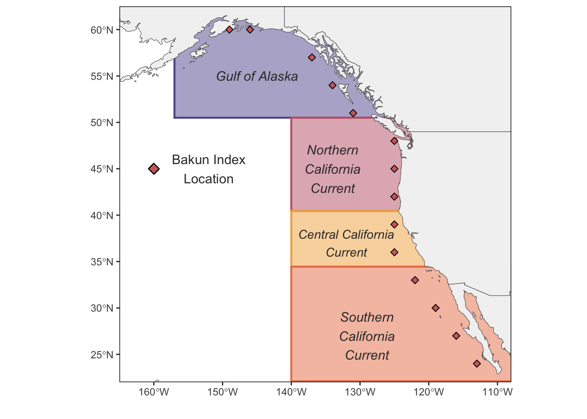
Figures 2 and 3 are purely exploratory to visualize patterns in upwelling and climate indices through time. Linear trends have been added to the temporal data to examine the breakpoints. These would not be a main text figure but may be included in a supplement.
Figure 2: Trends in upwelling through time by region. Spring upwelling model appears to have a 1988/1989 shift. Evidence for another shift are less pronounced. in the Northern CC 2022 actually appears to be anomalous, where it is pulling the the trend down that would normally be positive.
`geom_smooth()` using formula = 'y ~ x'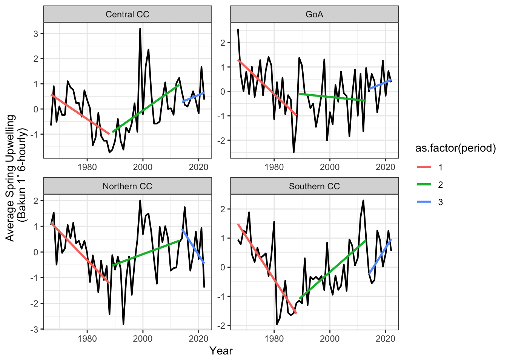
Figure 3: Trends in climate indices through through time. Evidence for a 1988/1989 PDO shift is not evident in ONI or NPGO. NPGO appear to have a bigger change in the past decade compared to the 1989/1988 shift.
`geom_smooth()` using formula = 'y ~ x'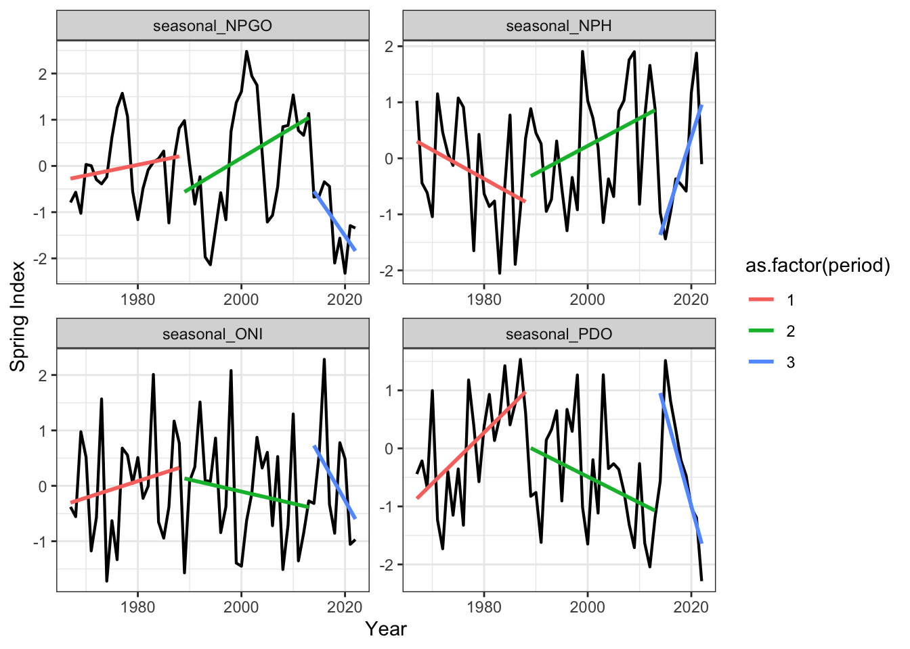
Upwelling and Environmental Forcing
Objective 2
Objective 2: Evaluate evidence for SST/SLP - climate indices.
Approach This section includes regression analysis to identify changes in the relationships between SST and SLP with regional climate indices. We apply linear models with time periods treated as factors (1967 - 1988; 1989 - 2013; 2013 - 2022) examining regional differences (Figure 1) in associations.
Summary The slope of the relationship between SST and climate indices is relaatively consistent through time. There is some change in the relationship with NPGO specifically during the 2013 - 2021 period particularly along the CCC and SCC coast. There is greater variability in the relationship (slope) between climate indices and SLP. There is a reversal of the relationship between climate indices and SLP from 1989 - 2012 and 2013 - 2022, this shift in the slope is particularly pronounced in the Northern California Current and PDO and ONI.
Figure 4: Linear regression (slope) between climate indices (PDO, ONI, NPH, NPGO) and sea level pressure. These correlations are based on three time periods: 1967-1988, 1989 - 2012, 2013 - 2022. 1988 marks a shift in Aleutian low variability, and increase in Winter SLP anomaly, and a change in the correlation between PDO - NPGO (see Litzow et al. 2020 PNAS).
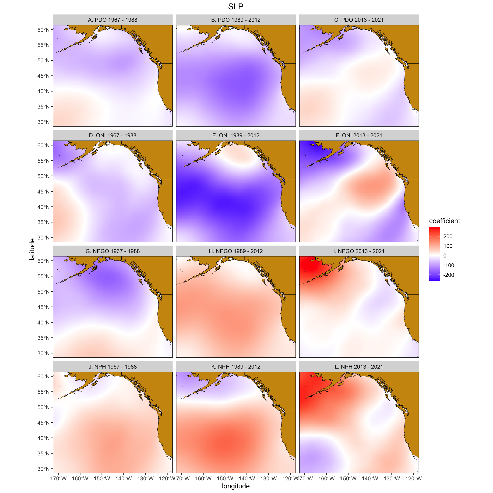
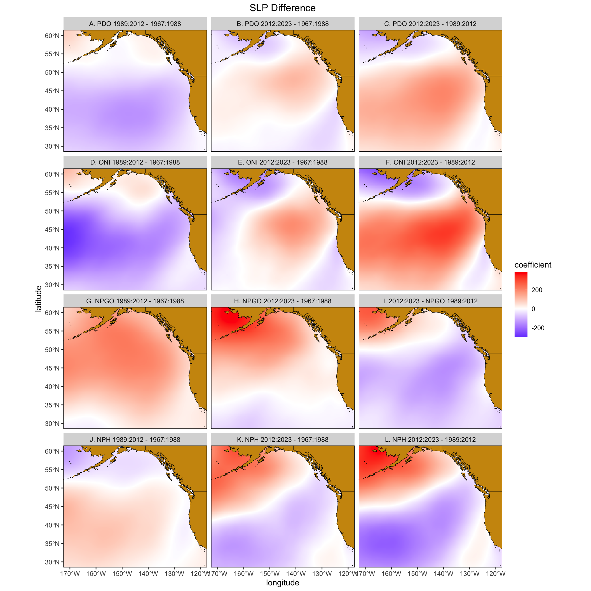
Figure 5: Linear regression (slope) between climate indices (PDO, ONI, NPH, NPGO) and sea surface temperature. These correlations are based on three time periods: 1967-1988, 1989 - 2012, 2013 - 2022. 1988 marks a shift in Aleutian low variability, and increase in Winter SST anomaly, and a change in the correlation between PDO - NPGO (see Litzow et al. 2020 PNAS).
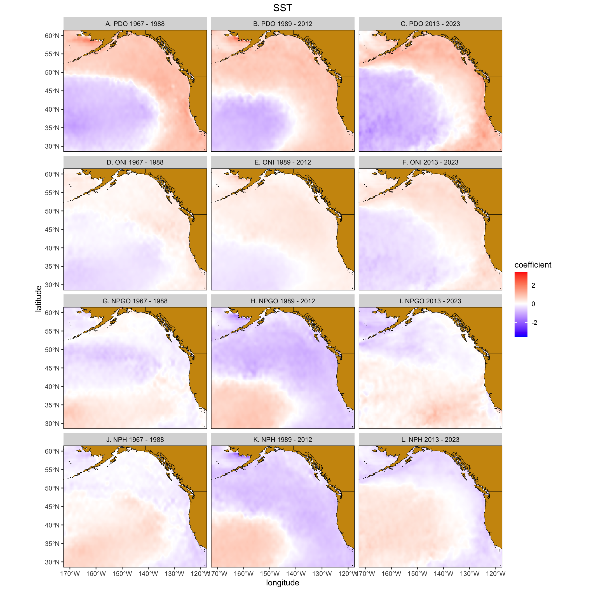
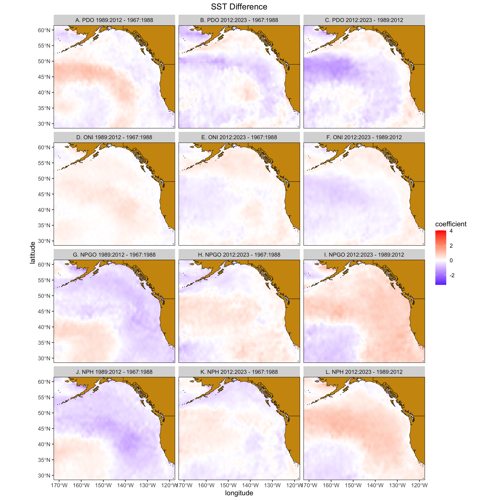
Upwelling and Climate Indices
Objective 3
Objective 3: Identify decoupling between climate indices and ecologically relevant physical conditions by assessing the relationship between upwelling and basin scale climate indices (PDO, NPGO, ENSO, NPI) during the marine heatwave era
Approach: Bayesian linear model with region-level factors (GoA, NCC, CCC, SCC) delineated based on Figure 1 using temporal factors for 1967 - 1988; 1989 - 2013; 2014 - 2023.
Summary: PDO: PDO tends to be most associated with vertical transport and isopycnal depth in the NCC. It is also associated with source depth and density in the NCC and CCC (Figure 17). Generally, PDO is negatively associated with upwelling. Historically, we find evidence of this negative relationship historically across all of the California Current (Figure 13b) but we find a dramatic change in the relationship between upwelling and both PDO/ONI in the NCC during the MHW era (Figure 13) where the the correlation switches from negative to positive. We do not find evidence for a MHW change in the other regions for PDO or ONI. This finding is in agreement with the correlation analysis, where we find a complete reversal of the slope coefficients between NCC upwelling and SST in the MHW era compared to the earlier periods (Figure 11).
NPGO: NPGO is positively associated with upwelling and is more associated with vertical transport in the SCC and source depth in the SCC and NCC (Figure 17). We find the relationship between upwelling and NPGO was similar during MHW era and the historic era (1967 - 1988) and did not differ substantially from 0 (weakly negative slope; Figure 13) indicating NPGO-upwelling not closely coupled during this period. However, the relationship was strongly coupled with a positive slope during the 1989 - 2013 period. Notably, NPGO values have been exceptionally negative during the MHW era - including the 3 most negative observations - resulting in a change in the intercept of the relationship. This is consistent across regions and indicates a change in mean values of NPGO.
ENSO: The relationship between ENSO-upwelling is similar to that of PDO-upwelling. Specifically, we find a consistent, negative relationship in the California Current, with a strengthening of that relationship in SCC and CCC consistent with the correlation analysis results. Similar to PDO, we find a reversal of the slope coefficient during the MHW era from negative to positive in NCC.
NPH: we do not find any strong relationships between NPI-upwelling. Generally, the posteriors for both intercept and slope overlap substantially across eras and regions
Figure 6: Trends in climate indices through through time. Evidence for a 1988/1989 PDO shift is not evident in ONI or NPGO. NPGO appear to have a bigger change in the past decade compared to the 1989/1988 shift.
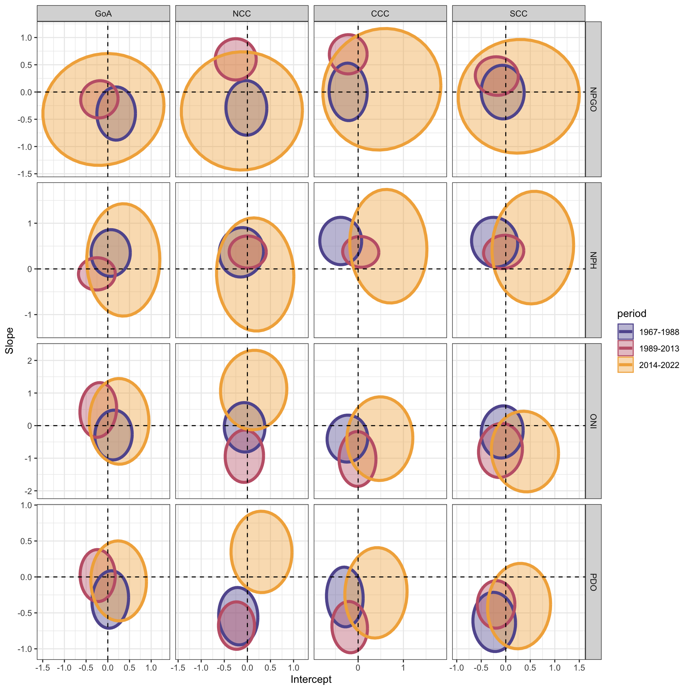
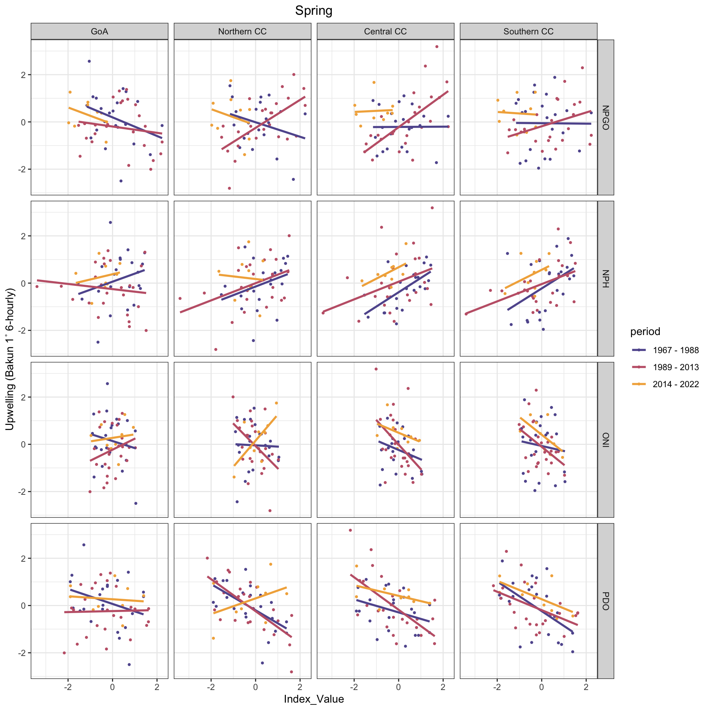
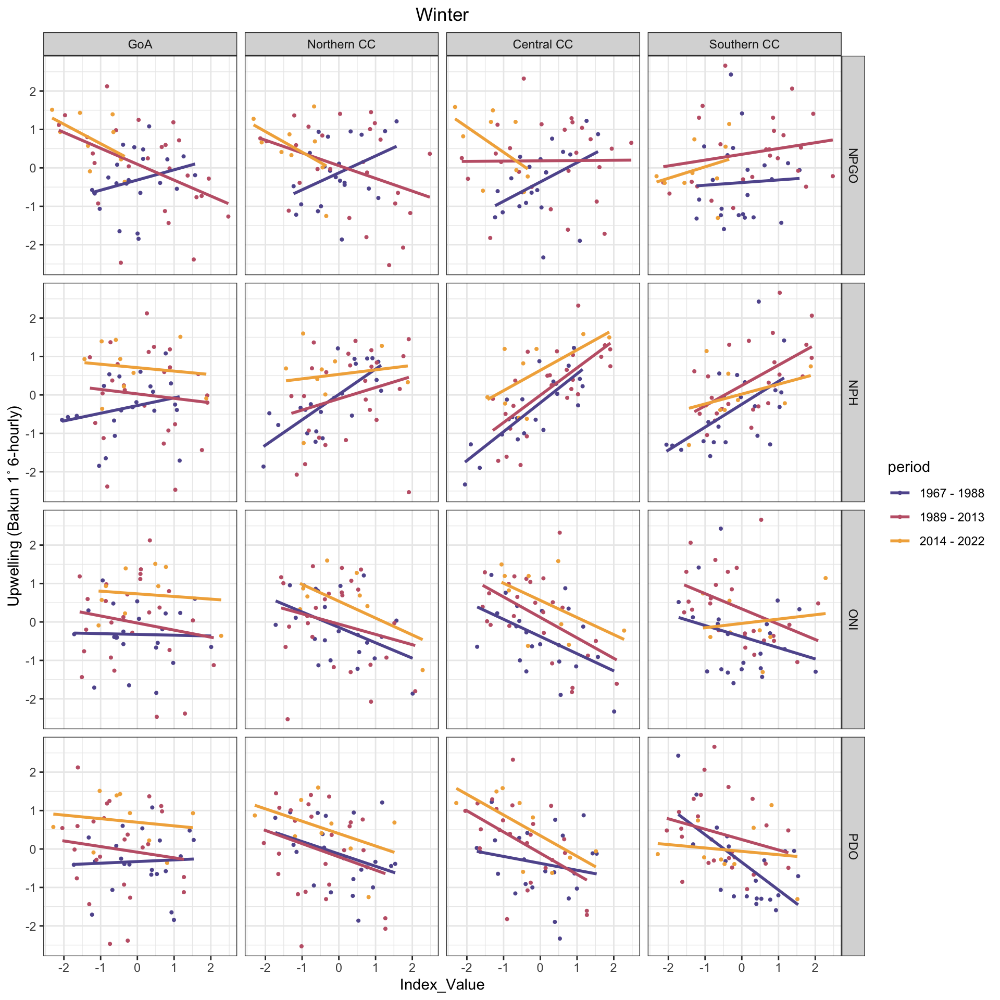
Copepod and Climate Indices
Objective 4
Objective 4: Identify whether decoupling between climate indices and physical conditions is reflected in the biology (copepods) of the NCC.
Approach: Bayesian linear model with temporal factors for 1996 - 2013; 2014 - 2023.
Summary: We find that the mean shift in NPGO has altered the relationship between NPGO-copepod abundance in the NCC. This change is reflected in both northern and southern copepod abundance although the magnitude and direction of the changing relationship is different across grouping. During the 1996 - 2013 era, southern copepod biomass is positively associated with NPGO but this relationship weakens and becomes slightly negative during the marine heat wave era. During the 1996 - 2013 era, northern copepod biomass was negatively associated with NPGO but this relationship did not differ from 0 during the marine heat wave era. In addtion, the intercept became negative for both groups.
We do not see a change in the relationship between copepods in the NCC and PDO/ENSO. This may be because: - the GoA and CC did not experience changes in PDO/ENSO relationships with physical forcing mechanisms (SST/SLP; Figure 4 & 5) and ocean conditions (upwelling; Figure 6) like the NCC. If the copepod abundance reflects biomass transported from other areas, we would expect it to primarily reflect changing conditions in 1) phisical- climate index relationships in the areas they are being transported from and 2) mechanisms of transport. The change in the relationships between NPGO, physical forcing mechanisms (SST/SLP), and ocean conditions (upwelling) during the marine heat wave era was observed across all regions unlike PDO/ENSO.
Northern Copepod and Climate Indices
Southern Copepod and Climate Indices
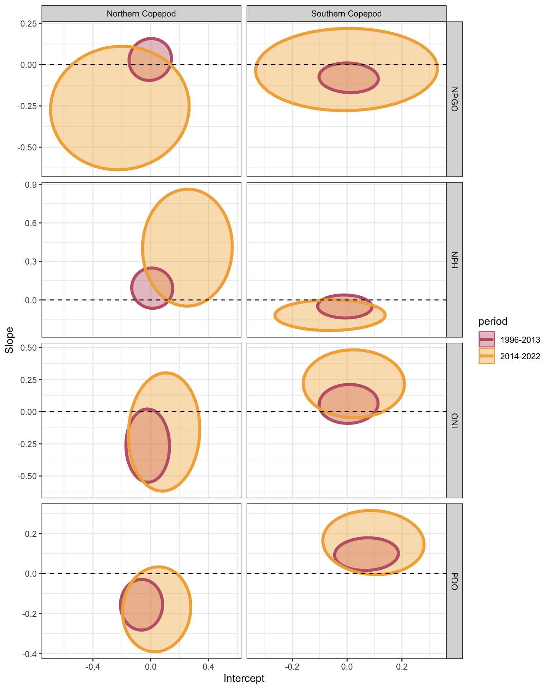
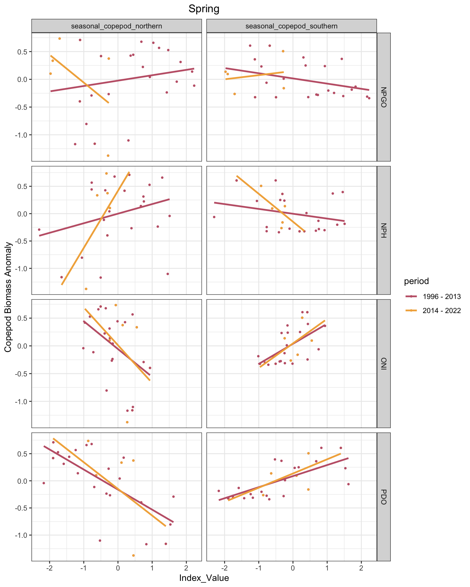
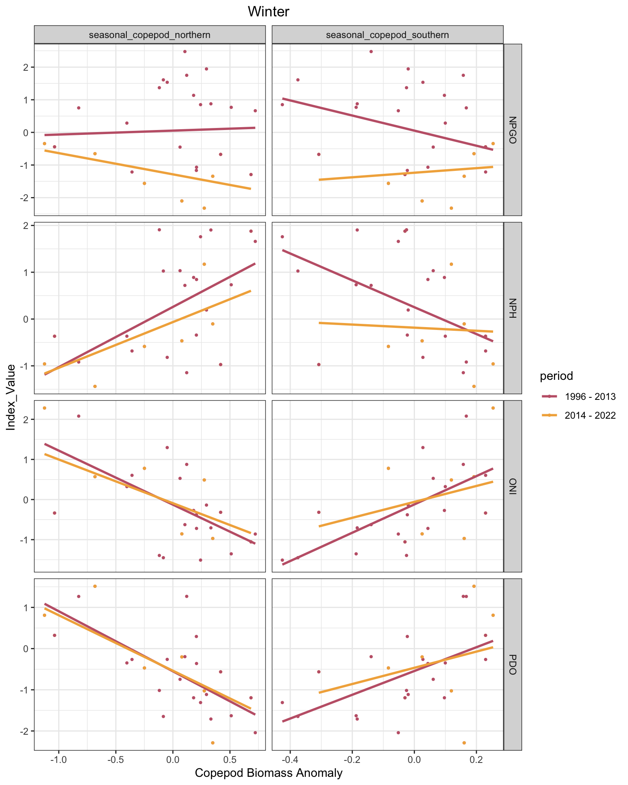
Figure 17: Reproduced from Mike Jacox for reference
Preliminary Conclusions: Our results show distinct spatial patterns in SLP and SST since 2000 compared to the pre-2000 record with an exceptional pattern of SST from 2014 - 2022 that had not been observed prior to 1996. Spatial patterns of SLP are associated with weak Aleutian Low and La Nina conditions that have also been observed in recent years. There is evidence of non-stationary relationships between upwelling, climate indices and forcing mechanisms, particularly during the MHW era in the Northern California Current. We found that the relationship between SST-upwelling and SLP-upwelling reversed from 2013 - 2022 in the NCC. We observed similar reversals between ENSO-upwelling and PDO-upwelling in the NCC during the MHW era. We also find evidence of moderate strengthening relationships between ENSO-upwelling and PDO-upwelling in the CCC and SCC driven by changes in the SST and SLP upwelling relationships in these regions. Altogether, these results indicate changing environmental meaning of climate indices, particularly ENSO and PDO, driven by global trends in forcing mechanisms, specifically SLP and SST. Further, we show evidence of prolonged and persistent change in SLP and SST since 2000 and at least since 2014. Applications of climate indices in ecological analyses should consider their environmental and ecological meanings differ from historical interpretations during the MHW era.